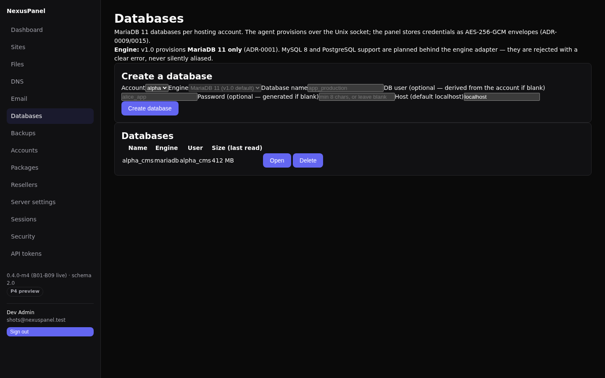

Databases
Customer databases on the node, MariaDB 11 only in v1.0 (ADR-0001).
The agent provisions over the local Unix socket through a
DatabaseEngineAdapter seam — MySQL 8 and PostgreSQL arrive
in v1.2 as additional adapters, not rewrites, and are rejected with a
clear message until then (never silently aliased).

Create a database live in the panel
Open Databases, pick a hosting account, and create a database. The name must start with a letter (lowercase letters, digits, underscore). If you omit the DB user, one is derived from the account and database names; if you omit the password, the panel generates a 24-character one. Provisioning is all-or-nothing: a failed user creation rolls the database back — no half-provisioned pairs.
Package limits are enforced before any node call:
db_count caps how many databases the account may have;
db_size_mb caps per-database size (checked when the size
is refreshed).
Users & grants live
Least privilege by default: the primary user gets exactly
ALL PRIVILEGES on its one database, from
localhost unless you pass an explicit host. Extra users
(e.g. a read-only reporting login) are granted through the same
panel — each grant is an audited db:manage operation. The
primary user cannot be deleted through the user editor; delete the
database instead.
Credentials encrypted at rest
- The credential is stored as an AES-256-GCM envelope (SecretBox, ADR-0009/0015) — decrypt only at point of use.
- Connection string and Reveal password are interactive-session-only: API tokens cannot mint working database credentials. Reveals are audited with a fingerprint — the audit trail never carries the material itself.
- The agent receives the password exactly once (at user creation); MariaDB keeps its own hash afterwards. Nothing credential-bearing is written to panel logs, the WAL, or audit payloads.
Tools live
- Refresh size — live read from
information_schema, cached on the row; exceeding the package cap logs a warning (the over-quota policy response lands with the job framework, B13). - Dump to home — writes a dump confined under the account's own home (C13 path rules), mode 0600. Restores read a dump back from the account home only.
- phpMyAdmin SSO token — an HMAC-signed, 60-second token binding the database and user. Honest note: the Adminer/phpMyAdmin consumer plugin ships with the app installer (B14); until then the token is real but has no consumer — stated, not hidden.

Not yet (honest list)
- MySQL 8 / PostgreSQL engines — v1.2 behind the adapter seam (ADR-0001).
- One-click "back up this database now" lives in the Backups panel (B10): create a database-scoped job and press Run now; the agent dumps MariaDB and ships the encrypted artifact. The dump button here stays an on-demand operator tool.
- phpMyAdmin/Adminer consumer for the SSO token — B14 app installer.
- Over-quota enforcement responses — B13 job framework.